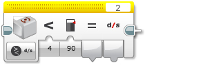

					<table cellpadding="0" cellspacing="0" border="0"><tbody><tr><td>
	
						<h1>陀螺仪传感器模块<a name="top"></a></h1>
		<div id="block_173" class="block blockHeader">
				<table cellspacing="0" cellpadding="0" border="0">
			<tbody><tr>
				<td valign="top" class="image"></td>
				<td valign="top" class="description"><div class="text-wrapper">陀螺仪传感器模块从陀螺仪传感器获取数据。可以测量旋转速率或旋转角度并获取数字输出。还可以将传感器数据与阈值进行比较以获取逻辑（“真”或“伪”）输出。<br>
<br>
有关陀螺仪传感器的作用、它提供的数据以及编程示例的更多信息，请参见<a href="./index.html?id=UsingSensors_Gyro">使用陀螺仪传感器</a>。</div></td>
			</tr>
		</tbody></table>
			</div>
	<div id="block_175" class="block blockTip">
		<div class="title">提示和技巧</div>
		<div class="boxContent">
			<div class="description">陀螺仪传感器模块通过<a href="./index.html?id=DataWires">数据线</a>输出数据。有关无需数据线的其他使用陀螺仪传感器的方式，请参见<a href="./index.html?id=UsingSensors_Gyro">使用陀螺仪传感器</a>。</div>
				</div>
	</div>
	<div id="block_182" class="block blockChaptor">
		<div class="title"><a name="ChooseTheSensorPortAndMode" style="position:relative; top:-10px;"></a>选择传感器端口和模式</div>
		<div class="description"><br>
<br>
 端口选择器 <br>
 模式选择器<br>
 输入<br>
 输出<br>
<br>
使用模块顶部的<a href="./index.html?id=PortSelector">端口选择器</a>可确保传感器端口号（1、2、3 或 4）与陀螺仪传感器连接的 EV3 程序块上的端口匹配。<br>
<br>
使用模式选择器可为模块选择模式。可用<a href="./index.html?id=Gyro#InputsAndOutputs">输入和输出</a>会因模式而异。</div>
	</div>
	<div id="block_183" class="block blockChaptor">
		<div class="title">模式</div>
		<div class="description"></div>
	</div>
	<div id="block_184" class="block blockMode">
		<div class="title"><a name="Mode_MeasureAngle" style="position:relative; top:-10px;"></a>测量 － 角度</div>
		<div class="description"><br>
<br>
“测量 － 角度”模式在<a href="./index.html?id=Gyro#Angle">角度</a>中输出旋转角度。角度相对于传感器的上次重置进行测量。使用<a href="./index.html?id=Gyro#Mode_Reset">重置</a>模式可将角度重置为 0。</div>
	</div>
	<div id="block_185" class="block blockMode">
		<div class="title"><a name="Mode_MeasureRate" style="position:relative; top:-10px;"></a>测量 － 速率</div>
		<div class="description"><br>
<br>
“测量 － 速率”模式在<a href="./index.html?id=Gyro#Rate">速率</a>中输出旋转速率。</div>
			<div class="links">请参见<a href="./index.html?id=UsingSensors_Gyro">使用陀螺仪传感器</a>中的编程示例 3。</div>
	</div>
	<div id="block_186" class="block blockMode">
		<div class="title"><a name="Mode_MeasureAngleAndRate" style="position:relative; top:-10px;"></a>测量 － 角度和速率</div>
		<div class="description"><br>
<br>
“测量 － 角度和速率”模式在<a href="./index.html?id=Gyro#Angle">角度</a>中输出旋转角度并在<a href="./index.html?id=Gyro#Rate">速率</a>中输出旋转速率。</div>
	</div>
	<div id="block_187" class="block blockMode">
		<div class="title"><a name="Mode_CompareAngle" style="position:relative; top:-10px;"></a>比较 － 角度</div>
		<div class="description"><br>
<br>
“比较 － 角度”模式使用所选<a href="./index.html?id=Gyro#Comparison">比较类型</a>将旋转角度与<a href="./index.html?id=Gyro#Threshold">阈值</a>进行比较。“真/伪”结果在<a href="./index.html?id=Gyro#Result">比较结果</a>中输出，旋转角度在<a href="./index.html?id=Gyro#Angle">角度</a>中输出。</div>
	</div>
	<div id="block_188" class="block blockMode">
		<div class="title"><a name="Mode_CompareRate" style="position:relative; top:-10px;"></a>比较 － 速率</div>
		<div class="description"><br>
<br>
“比较 － 速率”模式使用所选<a href="./index.html?id=Gyro#Comparison">比较类型</a>将旋转速率与<a href="./index.html?id=Gyro#Threshold">阈值</a>进行比较。“真/伪”结果在<a href="./index.html?id=Gyro#Result">比较结果</a>中输出，旋转速率在<a href="./index.html?id=Gyro#Rate">速率</a>中输出。</div>
	</div>
	<div id="block_1323" class="block blockMode">
		<div class="title"><a name="Mode_Reset" style="position:relative; top:-10px;"></a>重置</div>
		<div class="description"><br>
<br>
“重置”模式将传感器的旋转角度重置为 0（零）。旋转角度的测量会测量相对于传感器的上次重置的运动。</div>
	</div>
	<div id="block_189" class="block blockTip">
		<div class="title">提示和技巧</div>
		<div class="boxContent">
			<div class="description">通过随时间重复添加旋转速率读数来计算旋转角度。旋转速率的微小误差会随时间而累加，从而导致旋转角度“偏移”。将旋转角度重置为 0 会清除误差，并为将来的角度测量定义新起始点。</div>
				</div>
	</div>
	<div id="block_191" class="block blockChaptor">
		<div class="title"><a name="InputsAndOutputs" style="position:relative; top:-10px;"></a>输入与输出 <a name="Parameters" style="position:relative; top:-10px;"></a></div>
		<div class="description">可用于陀螺仪传感器模块的输入取决于所选模式。可以将输入值直接输入到模块中。或者，可以通过<a href="./index.html?id=DataWires">数据线</a>从其他编程模块的输出提供输入值。</div>
	</div>
	<div id="block_192" class="block blockTable ">
		<table class="blockTable">
		

			<tbody><tr>
<th>输入</th><th>类型</th><th>允许的值</th><th>备注</th>			</tr>
<tr><td>比较类型 <a name="Comparison" style="position:relative; top:-10px;"></a></td><td>数字</td><td>0 － 5</td><td>0：=（等于）<br>
1：≠（不等于）<br>
2：&gt;（大于）<br>
3：≥（大于或等于）<br>
4：&lt;（小于）<br>
5：≤（小于或等于）</td></tr><tr><td>阈值 <a name="Threshold" style="position:relative; top:-10px;"></a></td><td>数字</td><td>任何数字</td><td>要将传感器数据与之进行比较的值</td></tr>		</tbody></table>
	</div>
	<div id="block_193" class="block blockStep">
		<div class="title"></div>
		<div class="description">可用输出取决于所选模式。要使用某个输出，请使用<a href="./index.html?id=DataWires">数据线</a>将该输出连接到另一个编程模块。</div>
	</div>
	<div id="block_194" class="block blockTable ">
		<table class="blockTable">
		

			<tbody><tr>
<th>输出</th><th>类型</th><th>备注</th>			</tr>
<tr><td>角度 <a name="Angle" style="position:relative; top:-10px;"></a></td><td>数字</td><td>旋转角度（以度为单位）。<br>
相对于上次重置进行测量。<br>
使用“重置”模式重置。</td></tr><tr><td>速率 <a name="Rate" style="position:relative; top:-10px;"></a></td><td>数字</td><td>旋转速率（以度/秒为单位）。</td></tr><tr><td>比较结果 <a name="Result" style="position:relative; top:-10px;"></a></td><td>逻辑</td><td>比较模式的“真/伪”结果。</td></tr>		</tbody></table>
	</div>
	
			<div id="quick">
				<div class="header"><a href="./index.html?id=Gyro#header">陀螺仪</a></div>
					<div class="quickText">快速链接</div>
					
					<ul>
	<li><a href="./index.html?id=Gyro#ChooseTheSensorPortAndMode">选择传感器端口和模式</a></li><li><a href="./index.html?id=Gyro#InputsAndOutputs">输入与输出</a></li>					</ul>
			</div>
	
	</td></tr></tbody></table>